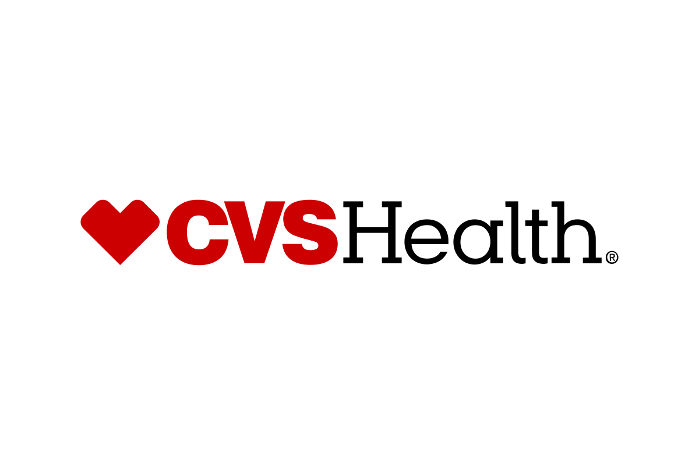
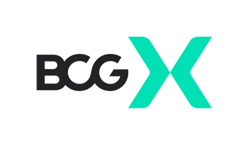
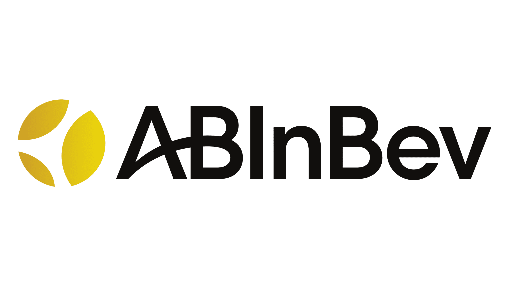
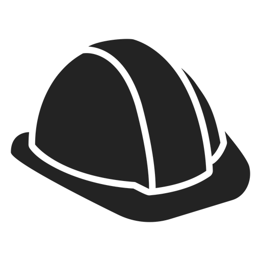

Work

CVS Health
Senior Data Scientist | Aug 2024 - Present
- Engineered and launched the next generation of widgets.
- Improved widget performance by 30%.
- Mentored junior widget engineers.

Boston Consulting Group
Data Scientist | Jun 2022 - Aug 2024
- Developed and maintained the company's main widget line.
- Collaborated with cross-functional teams to define widget specifications.
- Fixed over 100 widget-related bugs.

AB InBev
Assistant Manager | Jun 2019 - Oct 2020
- Predicted early stage alcohol content using regression, boosting Budweiser production line's service level accuracy by 12%
- "Coordinated cross-functional execution of $500K capital expenditure project, serving as primary liaison between internal departments and external suppliers to ensure on-time delivery
Internships

Undisclosed Industry Partner (worker safety solutions company)
Student Data Scientist Consultant | Jan 2022 - May 2022
- Built a deep learning classification model using PyTorch in Python to identify slips, trips, falls, or other events of workers from 15-second accelerometer data to identify potential workplace hazards with 74% precision
RH
Student Data Scientist Consultant | Jan 2022 - May 2022
- Forecasted shipping volumes per shipping lane between ports using ARIMA and ETS models per month achieving a cross-validated MAPE score of 47%